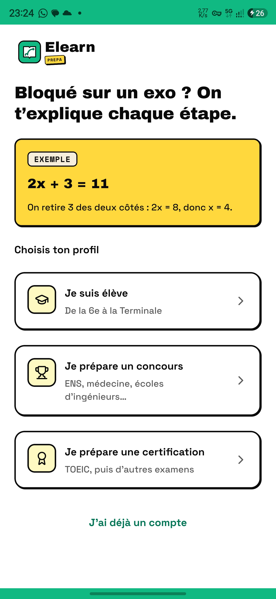
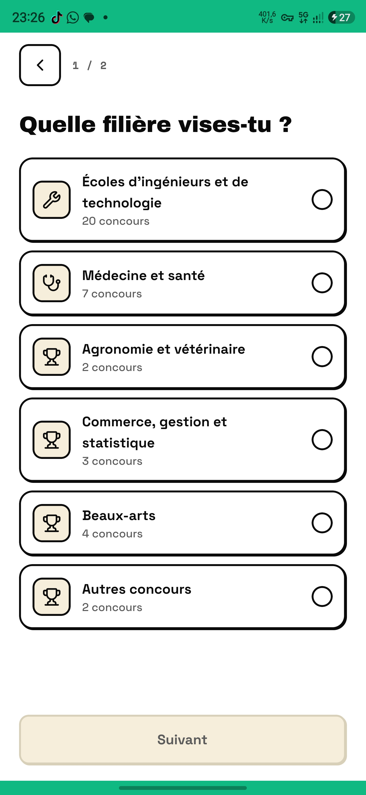
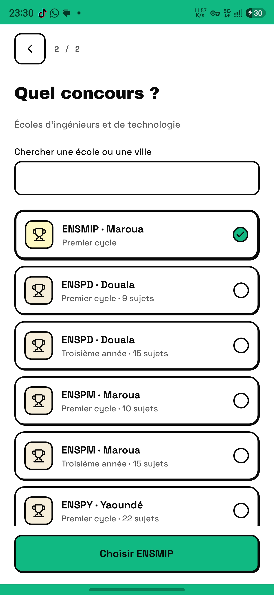
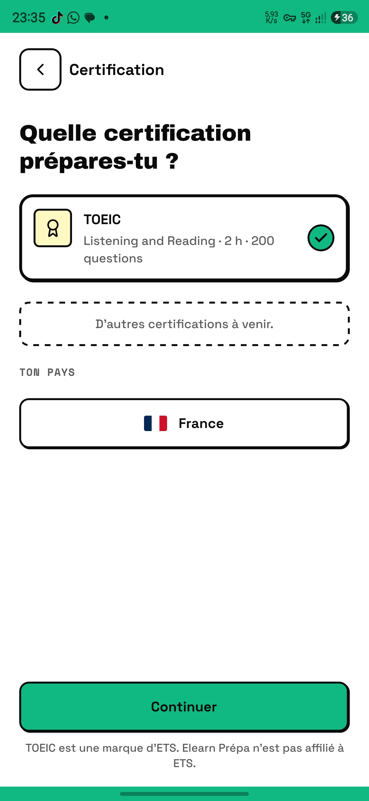
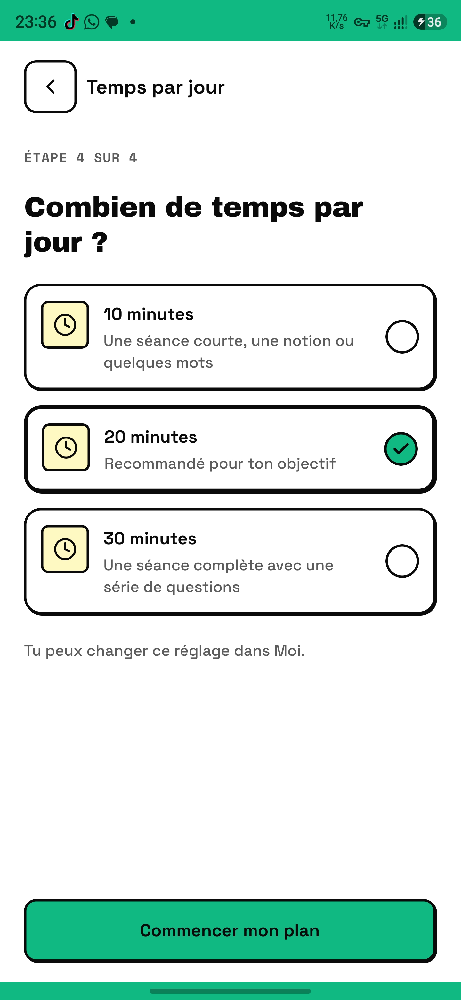
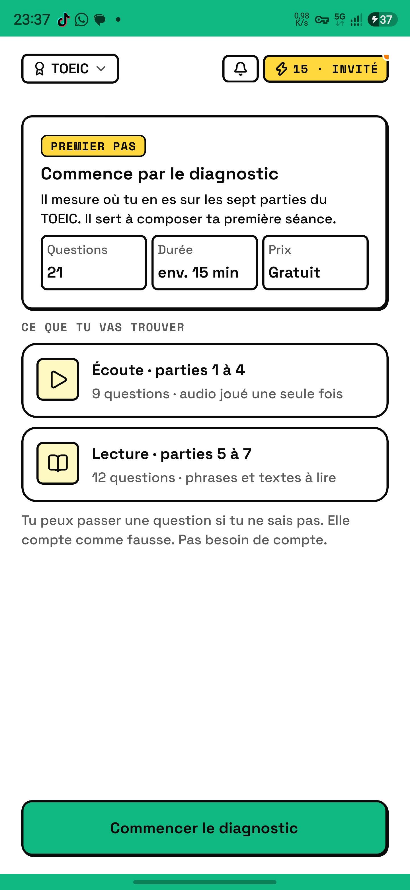
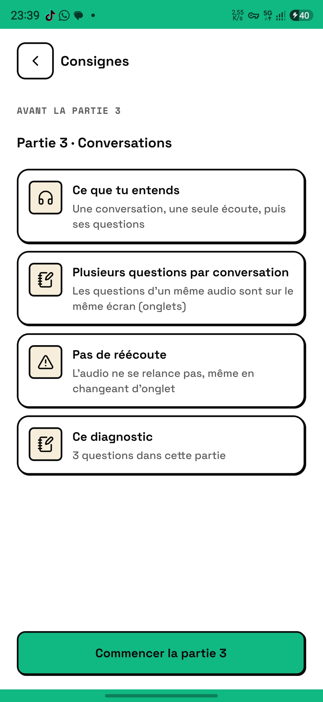
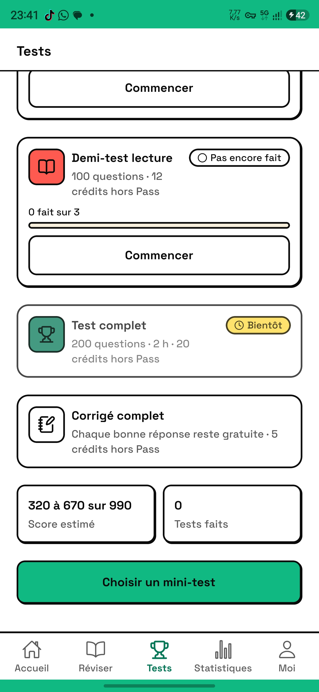

1. Écran de départ : une accroche qui parle aux trois profils
Plus de problème de maths (réservé à l’élève) : une phrase pour tous, trois profils clairs avec leur promesse. Le profil certification devient « Je prépare le TOEIC » (seule certification livrée). La carte jaune d’exemple disparaît : l’écran respire.
AVANT (capture réelle)

APRÈS
Elearn PREPA
Un examen à réussir ? On te guide pas à pas.
Cours, quiz, annales corrigées et un plan de révision sur mesure.
Choisis ton profil
Je suis élève
De la 6e à la Terminale
Je prépare un concours
Écoles d’ingénieurs, médecine, ENS…
Je prépare le TOEIC
Anglais pour l’université et le travail
J’ai déjà un compte
2. Concours : pays, filière, concours, détails
Pays d’abord. Chaque filière a sa couleur et son icône. Un toucher valide et passe à la suite : plus de bouton « Suivant », plus de « 1 / 2 ». En-tête compact (titre direct, pays et nombre dessous), recherche + puces de filtre (région, niveau), logo de l’école (champ imageUrl de la base, initiales si absent), nombre d’inscrits, toucher = feuille de détails avec « Choisir ce concours ». Texte « Ton programme et tes annales… » supprimé. Pays sans concours : message + formulaire de proposition. Liste vide après filtre : bouton vers les filières du pays. Changer de pays recharge la liste.
AVANT : filière (capture réelle)

AVANT : concours (capture réelle)

B1 · Pays
Dans quel pays passes-tu ton concours ?
CM
Cameroun
38 concours
GA
Gabon
Pas encore de concours
CI
Côte d’Ivoire
Pas encore de concours
SN
Sénégal
Pas encore de concours
BF
Burkina Faso
Pas encore de concours
TG
Togo
Pas encore de concours
BJ
Bénin
Pas encore de concours
B2 · Filière (un toucher = suite)
Cameroun
Quelle filière vises-tu ?
Écoles d’ingénieurs et de technologie
20 concours
Médecine et santé
7 concours
Écoles normales (ENS)
3 concours
Agronomie et vétérinaire
2 concours
Commerce, gestion et statistique
3 concours
Beaux-arts
4 concours
Autres concours
2 concours
B3 · Concours
Écoles d’ingénieurs
Cameroun · 20 concours
Chercher une école ou une ville
Toutes les régions
Niveau
Région
ENSP
ENSPY · Yaoundé
Premier cycle · 22 sujets
184 inscrits
ENSP
ENSPD · Douala
Premier cycle · 9 sujets
96 inscrits
ENSP
ENSPM · Maroua
Troisième année · 15 sujets
41 inscrits
ENSM
ENSMIP · Maroua
Premier cycle
27 inscrits
IUT
IUT · Douala
Troisième année
63 inscrits
B4 · Détails
Écoles d’ingénieurs
Chercher une école ou une ville
ENSP
ENSPY · Yaoundé
Premier cycle · 22 sujets
184 inscrits
ENSP
ENSPD · Douala
Premier cycle · 9 sujets
96 inscrits
ENSP
ENSPM · Maroua
Troisième année · 15 sujets
41 inscrits
ENSM
ENSMIP · Maroua
Premier cycle
27 inscrits
IUT
IUT · Douala
Troisième année
63 inscrits
ENSPY
ENSPY · Yaoundé
École nationale supérieure polytechnique · Premier cycle
22sujets
184inscrits
12 marsprochain concours
Sujets corrigés, leçons du programme et mission du jour adaptés à ce concours. Tu pourras changer depuis Moi.
Choisir ce concours
B5 · Pays sans concours
Gabon
Aucun concours pour le Gabon pour l’instant
Dis-nous lequel tu prépares : on l’ajoute en priorité et on te prévient.
Nom du concours ou de l’école
Ville (facultatif)
Proposer ce concours
Choisir un autre pays
B6 · Filtre sans résultat
Beaux-arts
Cameroun · 4 concours
Douala
Licence 3
Région
Aucun concours ne correspond
Essaie une autre filière pour le Cameroun.
Voir les filières du Cameroun
3. Certification : TOEIC déjà sélectionné
TOEIC est coché dès l’arrivée (seul choix livré) ; le pays est dans une ligne collée.
AVANT

APRÈS
Certification
Quelle certification prépares-tu ?
TOEIC
Listening and Reading · 2 h · 200 questions
D’autres certifications arrivent.
Ton pays
France
Continuer
TOEIC est une marque d’ETS. Elearn Prépa n’est pas affilié à ETS.
4. Listes collées et pages allégées
Temps par jour, consignes et diagnostic passent en bloc collé (un contour, un trait entre les lignes). Diagnostic : bloc Questions / Durée / Prix retiré, phrase « Tu peux passer… » retirée, plus d’air. Les questions de quiz restent séparées.
AVANT : temps

APRÈS
Temps par jour
ÉTAPE 4 SUR 4
Combien de temps par jour ?
10 minutes
Une séance courte
20 minutes
Recommandé pour ton objectif
30 minutes
Une séance complète
Commencer mon plan
AVANT : diagnostic

APRÈS
TOEIC
15 · Invité
PREMIER PAS
Commence par le diagnostic
Il mesure ton niveau sur les sept parties du TOEIC et sert à composer ta première séance.
Écoute
Parties 1 à 4
Lecture
Parties 5 à 7
Commencer le diagnostic
AVANT : consignes

APRÈS
Consignes
AVANT LA PARTIE 3
Partie 3 · Conversations
Ce que tu entends
Une conversation, une seule écoute
Plusieurs questions par audio
Même écran, en onglets
Pas de réécoute
L’audio ne se relance pas
Ce diagnostic
3 questions dans cette partie
Commencer la partie 3
5. Tests : test complet actif, invité = feuille « Crée un compte »
Le test complet n’est plus « Bientôt » : 3 tests de 200 questions sont validés en base. Pour un invité, toucher un demi-test ou un test complet ouvre une feuille du bas qui explique qu’il faut un compte (règle §21), au lieu de renvoyer vers l’inscription.
AVANT

APRÈS : onglet Tests
Tests
Demi-test lecture
100 questions · 12 crédits hors Pass
Pas encore fait
Commencer
Test complet
200 questions · 2 h · 20 crédits hors Pass
Pas encore fait
Commencer
Corrigé complet
Chaque bonne réponse reste gratuite · 3 crédits
Voir le corrigé
APRÈS : invité touche Commencer
Tests
Demi-test lecture
100 questions · 12 crédits hors Pass
Commencer
Test complet
200 questions · 2 h · 20 crédits hors Pass
Commencer
Crée un compte pour passer ce demi-test
Les demi-tests et les tests complets sont réservés aux comptes : ton score et ton historique y sont enregistrés. C’est gratuit, ça prend une minute.